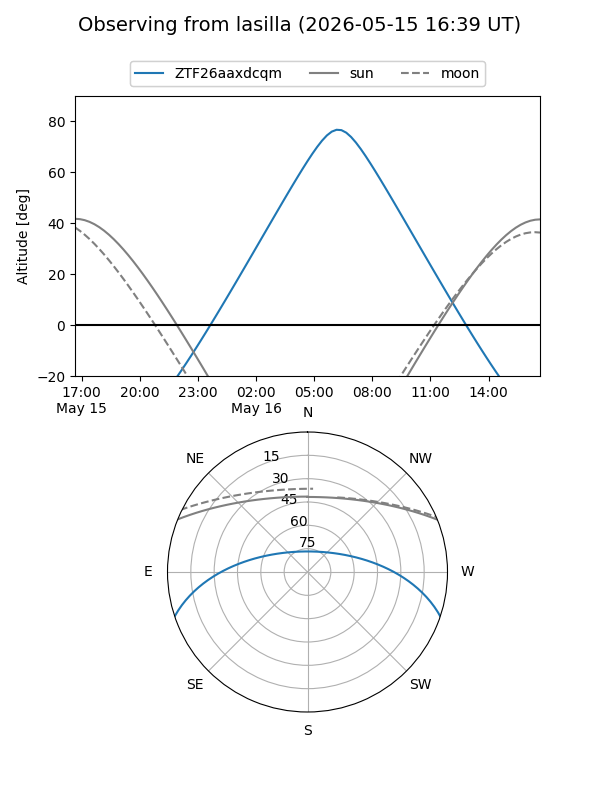
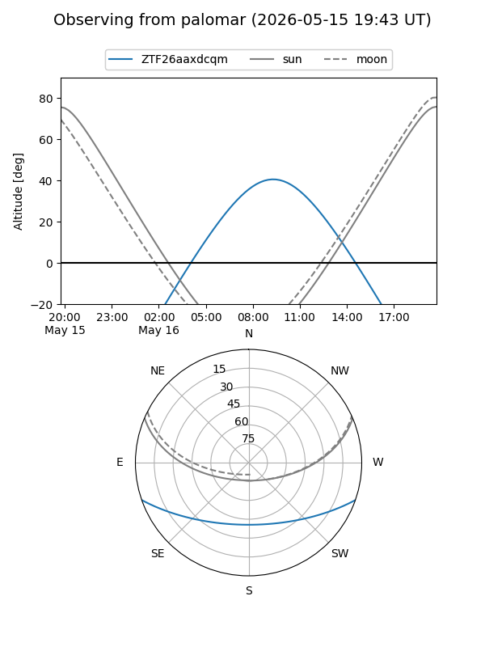

ZTF26aaxdcqm
Target ZTF26aaxdcqm at 2026-05-16 09:49
Aliases and brokers:
FINK: link
Lasair: link
ALeRCE: link
alt names
ZTF26aaxdcqm (ztf,fink_ztf)
Coordinates:
equatorial (ra, dec) = 256.4221,-16.00513
equatorial (HMS+DMS) = 17:05:41.31,-16:00:18.47
galactic (l, b) = (5.8274,+14.78276)
Flags:
Photometry:
last ztfg=18.55
1 ztfg detections
Lightcurve
Visibility


Additional plots